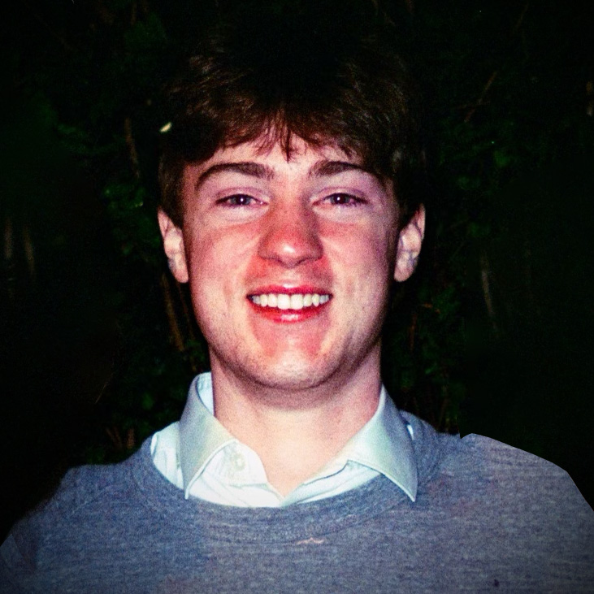

I began my journey as a programmer, but discovered through my work to achieve a multimedia minor that I have a passion for creating content. My vision is to marry my technical skills with my creativity and design skills to produce new and interesting content for others to enjoy.
I discovered a passion for using technology to tell meaningful stories and build the very connections I value. This led me to pursue Technical Art and Game Design. I'm not just a coder; I'm a hands-on builder who can manage an ad-hoc render farm, a project manager who can lead a team under a 4-day deadline, and a designer who wants to create games that mean something.
I'm always open to discussing new projects and creative challenges. The best way to reach me is by email.